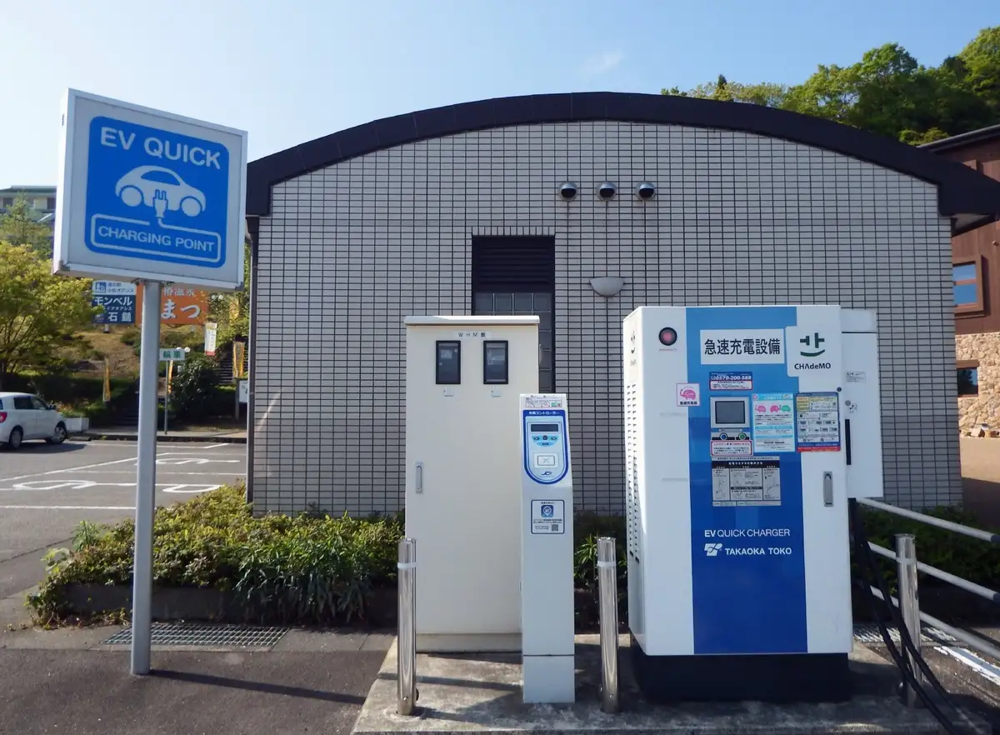
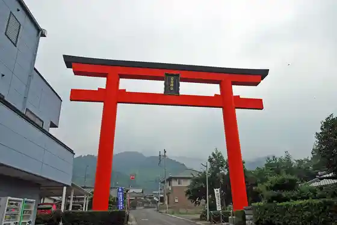
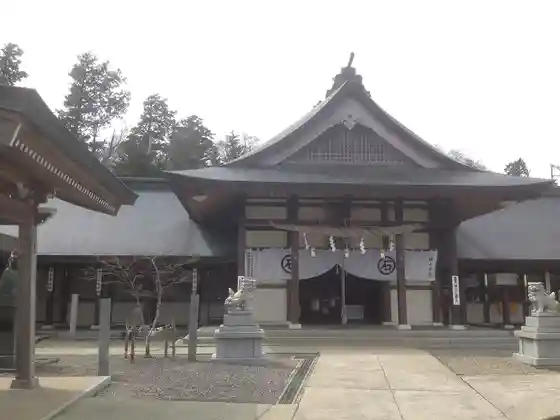
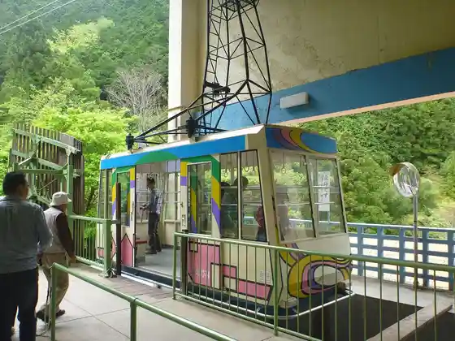
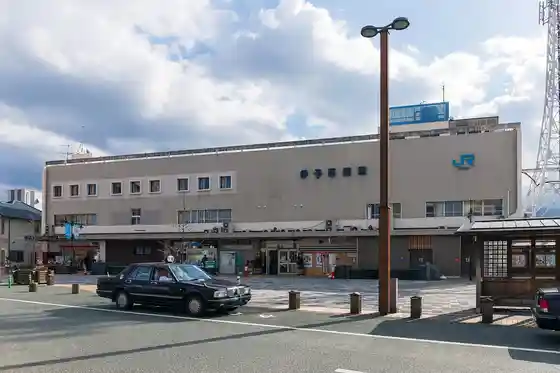

Saijo
Saijo · Ehime
Saijo
Highlighted on the Ehime map.

Stay
Taminaru Hotel Toyo
Saijo Aban Hotel
Hotel Oreru Saijo
Hotel Aoki
Hotel Tama no Ie Saijo
Kyuka Village Setochi Toyo
Hotel Rutoin Iyo Saijo
Bijinesu Hotel Anekkusu Akayane
Gensen Kake Nagashi no Yado Yunotani Onsen
Ishizuchi Jinja Hall
Ekusutoruin Saijo Ekimae
O Yado Suke Ie
Saijo Sentoraru Hotel
Yamada Ya / Minpaku
Tsugoe no Ie Bettei ^
Tennen Onsen Ishizuchi Baths Supa Hotel Iyo Saijo
HOTEL AZ Ehime Toyo Mise
ITOMACHI HOTEL 0 (Itomachi Hotel Zero)
Nature to Seijaku no Oashisu : Saikuringu, Ishizuchi Tozan, O Henro no Riso no Habu : Kurenrinesu dandan/ Minpaku
Hotel Taiyo Farm Saijo
Serufuin Ehime Saijo
Toreiruin Iyo Saijo Mise
Dining
Musubi
Yatsurugi Den Iyo Saijo Chuo Mise
Bincho Ogiya Iyo Saijo Mise
Izakaya Tenryu Satoru Ryu
Uotami Iyo Saijo Ekimae Mise
Jun Na Sake Bo Mitsukiya
Jukusei Buta Senmonten Katsu Fuku Saijo Mise
Pan Workshop Zenryu Kona Toyukaina Nakama
Regarisu
Yuzuya
Resutoran Nara
O Konomi Yaki Ikoi
Hiroyoshi
Komugi no Dorei Saijo Mise
Hyotan
Men Tokoro Ota Ya
Onsen
Taminaru Hotel Toyo Public Bath
Saijo Aban Hotel Public Bath
Hotel Tama no Ie Saijo Public Bath
Kyuka Village Setochi Toyo Public Bath
Hotel Rutoin Iyo Saijo Tabibito Baths
Gensen Kake Nagashi no Yado Yunotani Onsen Public Bath
Ishizuchi Jinja Hall Public Bath
Ekusutoruin Saijo Ekimae Public Bath
Yamada Ya / Minpaku Public Bath
Tennen Onsen Ishizuchi Baths Supa Hotel Iyo Saijo Tennen Onsen
ITOMACHI HOTEL 0 (Itomachi Hotel Zero) Gensen Kake Nagashi no Onsen
Hotel Taiyo Farm Saijo Public Bath
Sights
Roadside Station Komatsu Oashisu
Ishizuchi Jinja Honsha

Ishizuchi Jinja Joju Sha

Ishizuchi Tozan Ropuei

Iyo Saijo Eki

Maegami Tera